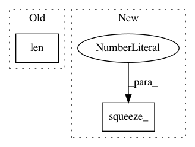

e503f50cb38fb1864fb6d66ba927b0852159428d,gpytorch/utils/interpolation.py,Interpolation,interpolate,#Interpolation#Any#Any#,34
Before Change
C[left_boundary_pts[i], closest_from_first[i]] = 1
lower_grid_pt_idxs[left_boundary_pts[i]] = 0
right_boundary_pts = torch.LongTensor([i for i in range(len(lower_grid_pt_idxs))
if (lower_grid_pt_idxs > num_grid_points - num_coefficients)[i] == 1])
num_right = len(right_boundary_pts)
After Change
num_right = len(right_boundary_pts)
if num_right > 0:
right_boundary_pts.squeeze_(1)
x_grid_last = x_grid[-num_coefficients:].unsqueeze(1).t().expand(num_right, num_coefficients)
grid_targets = x_target[right_boundary_pts].unsqueeze(1).expand(num_right, num_coefficients)
dists = torch.abs(x_grid_last - grid_targets)
In pattern: SUPERPATTERN
Frequency: 3
Non-data size: 2
Instances
Project Name: cornellius-gp/gpytorch
Commit Name: e503f50cb38fb1864fb6d66ba927b0852159428d
Time: 2017-09-22
Author: gpleiss@gmail.com
File Name: gpytorch/utils/interpolation.py
Class Name: Interpolation
Method Name: interpolate
Project Name: cornellius-gp/gpytorch
Commit Name: 26ce348437037a351f6f646207e1c20f3853c8b7
Time: 2018-01-10
Author: gpleiss@gmail.com
File Name: test/util/test_cubic_interpolation.py
Class Name:
Method Name: test_interpolation
Project Name: kengz/SLM-Lab
Commit Name: 0ac2b33e8c63304a50db7d2b484368299706b58b
Time: 2018-11-14
Author: kengzwl@gmail.com
File Name: slm_lab/agent/net/recurrent.py
Class Name: RecurrentNet
Method Name: forward